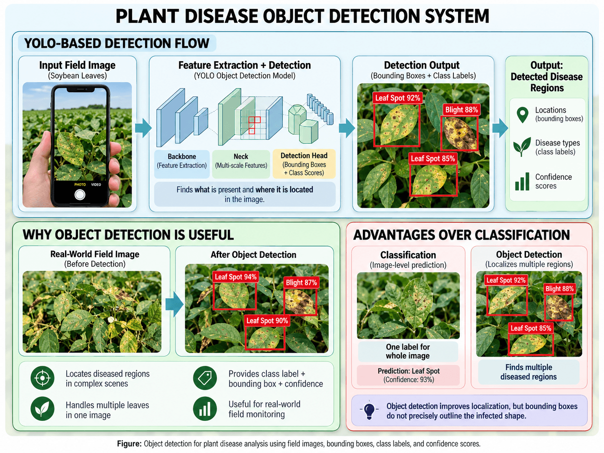

Spatial Object Detection for Agricultural Diagnostics
While classification answers the question "Is there disease present in this image?", object detection resolves both what pathogen is present and where it is spatially situated. Instead of returning a single global label for the entire camera frame, object detection predicts rectangular bounding boxes around individual targets—enabling simultaneous localization of multiple leaves, localized pustules, and discrete lesions across the canopy [1].
Why Localization Matters in the Field
Natural field captures rarely isolate a single, centered leaf. A typical smartphone snapshot or drone capture contains a cluster of overlapping leaves, some fully healthy, others exhibiting early-stage blight, and others suffering mechanical insect damage. Object detection enables automated systems to parse cluttered foliage into discrete, individual leaf instances for isolated evaluation.
YOLO (You Only Look Once) Framework
In agricultural robotics and mobile monitoring, inference speed is critical. Two-stage detectors (such as Faster R-CNN) first generate region proposals and then classify them, resulting in high latency. In contrast, YOLO (You Only Look Once) frames object detection as a single-stage regression problem directly from full-image pixels to bounding box coordinates and class probabilities [1].
- Single Forward Pass: YOLO divides the input image into an $S \times S$ spatial grid. If an object center falls into a grid cell, that cell is responsible for predicting bounding box offsets.
- Bounding Box Tuple: For each candidate object, the network predicts five continuous values alongside class scores: $$\mathbf{b} = (t_x, t_y, t_w, t_h, p_o)$$ where $(t_x, t_y)$ represent center offsets relative to the cell, $(t_w, t_h)$ represent width and height scalings, and $p_o$ represents objectness confidence.
- Multi-Scale Feature Aggregation: Modern iterations (such as YOLOv8) utilize Path Aggregation Feature Pyramids (PANet) to merge high-resolution shallow spatial features with deep semantic features, allowing the network to detect tiny fungal lesions as well as large complete leaves simultaneously.
Core Elements of Object Detection Output
- Bounding Box Coordinates: Explicit spatial coordinates $(x_{\min}, y_{\min}, x_{\max}, y_{\max})$ isolating the leaf or disease region.
- Categorical Class Label: Specific botanical pathology identified (e.g., Early Blight vs. Healthy Leaf).
- Confidence Score: Calibrated probability metric $[0.0, 1.0]$ quantifying the model's certainty that a target exists within the box and belongs to the predicted class.

Comparative Evaluation: Classification vs. Object Detection
| Dimension | Image Classification | Object Detection (YOLO) |
|---|---|---|
| Output Format | Single global label & probability vector | Multiple bounding boxes $[x, y, w, h]$, labels, and confidence scores |
| Spatial Precision | None (no coordinate or region information) | Coarse rectangular localization |
| Multi-Object Capability | Fails when healthy and infected leaves co-occur | Detects and isolates multiple distinct leaves simultaneously |
| Background Robustness | High risk of background confounding | Separates target foliage from background soil and weeds |
| Annotation Cost | Low (single label per image) | Moderate to High (requires manual bounding-box labeling) |
| Inference Complexity | Lowest (rapid forward pass) | Fast (real-time capable: 30–60+ FPS on edge GPUs) |
Remaining Limitations of Bounding-Box Detection
While object detection solves the multi-leaf localization challenge, rectangular bounding boxes remain fundamentally coarse approximations. Plant disease lesions possess irregular, non-convex boundaries. A rectangular box necessarily encompasses a mixture of healthy parenchyma tissue, damaged spots, and background foliage. Consequently, bounding boxes cannot quantify the precise percentage of diseased leaf area. To achieve accurate severity measurement, computer vision pipelines must advance to pixel-level semantic segmentation.
Module Narration
A 1–2 minute audio overview of YOLO object detection principles, bounding-box localization, and edge performance.